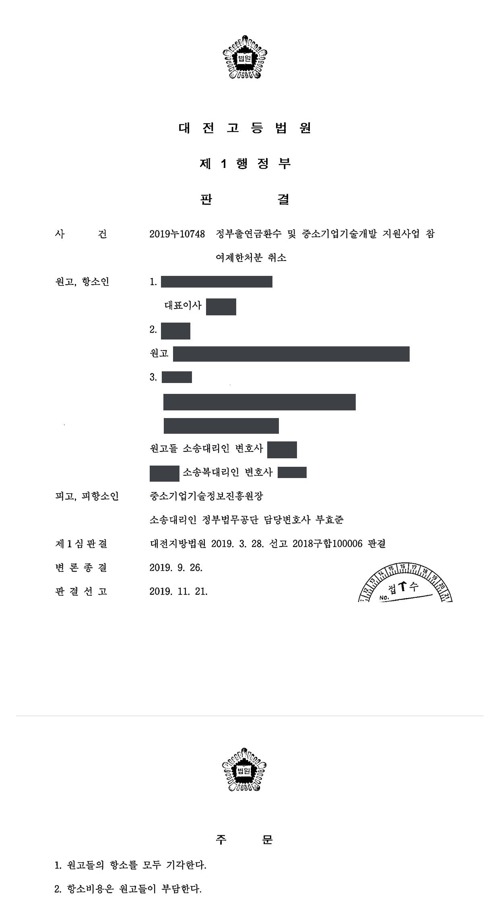

국가연구개발사업 정부출연금 환수 및 참여제한처분 취소소송 (1·2심)
대전지방법원 2018구합100006 · 대전고등법원 2019누10748 · 담당변호사 부효준
판결문


사건의 요지
계속과제의 최종평가 '실패'·성실성 검증 '불성실' 판정에 따른 3년 참여제한과 정부출연금 환수처분(이의결정으로 환수금 감액)에 관하여, 이의결정이 원처분을 대체하는 새로운 처분인지와 처분사유의 존부·재량권 일탈·남용이 1·2심에서 다투어진 사건입니다.
사건의 주요 내용
원고 회사는 방사성동위원소와 의료기기를 개발·제조하는 기업으로, 2010년도 중소기업 기술혁신개발사업에서 방사성동위원소를 이용한 암 근접치료용 의료기기 개발 과제를 1단계(기술개발)·2단계(제품개발)의 계속과제로 수행하였습니다. 1단계 협약(2010년 11월~2012년 10월, 정부출연금 5억 9,800만 원)과 2단계 협약(2012년 12월~2013년 11월, 정부출연금 3억 원)은 당시의 전문기관과 체결하였고, 1단계는 '단계성공' 평가를 받았습니다. 원고 회사의 대표이사와 연구책임자도 원고로 참여하였습니다.
2단계 최종보고서가 2014년 4월 제출된 뒤 사업이 다른 전문기관(피고)으로 이관되었고, 최종평가위원회는 2015년 10월 '보류' 판정을 거쳐 2016년 2월 사업계획서와 최종보고서의 정량적 평가항목이 다르고 공인 시험성적서가 확보되지 않았으며 의료기기 인허가 과정이 전혀 수행되지 않았다는 이유로 '실패' 판정을, 성실성 검증위원회는 2016년 6월 '불성실(실패)' 판정을 하였습니다. 전문기관은 2017년 10월 원고들에게 각 3년의 참여제한과 원고 회사에 1·2단계 정부출연금 중 정산금을 뺀 886,277,689원의 환수를 통보하였습니다(원처분).
원고들이 이의신청을 하자 전문기관은 2017년 12월 참여제한 기간은 3년으로 유지하되 그 시기·종기를 새로 정하고, 환수금은 2단계 협약의 정부출연금 중 정산금을 뺀 288,702,662원으로 감액하는 이의결정을 하였습니다. 원고들은 주위적으로 원처분의 취소를, 예비적으로 이의결정의 취소를 구하였습니다.
쟁점
- 강제징수 규정이 없는 구 중소기업 기술혁신 촉진법상 출연금 환수처분이 항고소송의 대상이 되는 처분인지
- 환수금액을 대폭 감액하고 참여제한 기간과 납부기한을 새로 정한 이의결정이 원처분과 별개의 새로운 처분인지, 그 경우 원처분의 취소를 구하는 주위적 청구가 적법한지
- '연구개발과정의 불성실 수행'과 '연구결과의 극히 불량'을 별도로 판단할 때, 과제 종료 뒤 발급받은 시험성적서와 인허가, 실시되지 않은 임상시험, 연구노트의 수준을 어떻게 평가할 것인지
원고의 주장
- 과제 수행 결과가 '극히 불량한 경우'에 해당하지 않고, 설령 그렇더라도 과제를 성실하게 수행하였다고 주장하였습니다. 최종적으로 확정된 사업계획서를 기준으로 보면 최종보고서의 정량적 평가항목이 다르지 않고, 최종평가 시점까지 여러 시험기관으로부터 기술개발 결과를 객관적으로 평가할 수 있는 시험성적서를 확보하였다는 것입니다.
- 부득이한 사정으로 의료기기 인허가를 과제기간 안에 마치지 못하였지만 과제 종료 뒤 방사성의약품 제조업 허가와 의약품 제조·품질관리기준 적합판정을 받았고, 성실성 검증위원회에는 직원의 착오로 과제와 무관한 연구노트가 제출되어 '불성실' 판정을 받은 것인데 이의신청 단계에서 제대로 된 연구노트를 제출하였음에도 반영되지 않았다고 주장하였습니다.
- 따라서 원처분과 이의결정은 처분사유가 없거나 재량권을 일탈·남용한 것이라고 주장하였습니다.
부효준 변호사의 주장
- 본안전항변으로, 출연금 환수처분은 근거 법령에 자기집행력(강제징수) 규정이 없어 민사집행 절차로 환수할 수 있을 뿐이므로 그 자체로 원고 회사의 권리·의무에 직접 영향을 주는 처분이 아니고, 이의결정은 참여제한 총기간이 원처분과 같고 환수금액만 일부 감액된 것으로 원처분을 그대로 유지한 것에 불과하여 별도의 항고소송 대상이 되지 않는다고 주장하였습니다.
- 본안에서는, 연구개발 결과와 과정의 평가는 전문가로 구성된 최종평가위원회·성실성 검증위원회가 재심 절차까지 거쳐 내린 것이므로 존중되어야 한다는 전제에서, 원고들이 내세운 시험성적서는 사업계획서에 적은 공인인증기관의 것인지 불분명하고 모두 개발기간이 지난 뒤 발급된 것이며, 1단계 평가에서 보완을 요구받은 임상시험을 2단계 기간에 실시하지 않았고 연구노트도 협약이 요구하는 수준에 미치지 못하였다고 반박하였습니다.
법원의 판단
법원은 먼저 소송의 대상을 정리하였습니다. 출연금 환수처분은 구 중소기업 기술혁신 촉진법 제32조 제1항에 근거하여 원고 회사에 직접 반환의무를 지우는 공법상 행위이므로 강제징수 규정이 없더라도 항고소송의 대상이 되는 처분이라고 보아 전문기관의 항변을 받아들이지 않았습니다. 또 이의결정은 참여제한 기간뿐 아니라 환수금액을 대폭 감액하고 납부기한을 새로 정하면서 원처분과 동일한 형식을 취하였으므로 원처분의 주요 부분을 실질적으로 변경하는 새로운 처분이고, 그 결과 원처분은 효력을 상실하였다고 보아 원처분의 취소를 구하는 주위적 청구를 각하하였습니다.
예비적 청구에 관하여는 '연구개발과정의 불성실 수행 여부'와 '연구결과의 극히 불량 여부'를 별도로 판단하여야 한다는 대법원 판례(2015. 4. 23. 선고 2014두47969 판결)에 따라 살폈습니다. 원고들이 내세운 시험성적서는 사업계획서에 적은 공인인증기관의 것인지 알기 어렵고 개발기간이 지난 뒤 발급받은 것이며, 1단계 평가에서 2단계 기간 안의 임상시험 계획을 보완하라고 요구받았음에도 임상시험을 실시하지 않았고, 평가위원회의 종합평점이 23점이었으며 이의신청에서도 평가위원 전원이 '실패'로 판단한 점을 들어 결과가 극히 불량하다는 판단은 정당하다고 하였습니다.
불성실 수행에 관하여도, 연구노트는 단순한 메모 수준이 아니라 제3자가 연구 과정과 결과를 재현할 수 있도록 기록되어야 하는데 제출된 연구노트는 그 수준에 미치지 못하고, 최종보고서 제출 시 공인인증기관 시험성적서를 내지 않은 것은 운영요령 제24조 제2항 위반이라고 보았습니다. 시행령이 정한 최고한도(3년, 전액)로 처분하였더라도 평가결과와 협약 위반의 정도를 고려한 것이어서 재량권 일탈·남용이 아니라고 하여 예비적 청구를 기각하였고, 원고들이 항소하였으나 항소심(대전고등법원 2019누10748)도 2019년 11월 1심의 결론을 유지하였습니다.
피고가 이 사건 이의결정을 함에 있어서 이 사건 원처분에 대한 이의신청을 받아들이지 아니한다는 형식을 취하지 아니하고 이 사건 원처분과 동일한 형식을 취하면서, 앞서 본 바와 같이 원고들에 대한 참여제한기간을 새롭게 정하고, 환수금액에 대하여도 구체적인 금액을 명시함과 아울러 납부기한 역시 새롭게 정한 취지는, 단순히 원고들의 이의신청의 당부만을 판단하여 이 사건 원처분을 그대로 유지하겠다는 것이 아니라 원고들의 이의신청 내용을 기초로 원고들에 대한 참여제한처분과 환수처분의 사유를 새롭게 심사하여 이 사건 이의결정 이후의 참여제한과 환수에 관한 법률관계를 이의결정에 의하여 규율하겠다는 것으로 봄이 타당하다.
대전지방법원 2018구합100006 판결 이유 '5. 가. 3) 나)' 부분
이 사건 이의결정이 적법하기 위해서는 '연구개발과정의 불성실 수행 여부'와 '연구결과의 극히 불량 여부'를 별도로 판단하여 두 가지 점이 모두 인정되어야 한다. 연구결과가 극히 불량하다는 점이 인정된다고 하여 연구개발과정의 불성실 수행이 추정되는 것은 아니다. 나아가 '연구개발과정의 불성실 수행 여부'는 연구개발사업의 전제가 된 사업계획서의 내용, 사업추진의 구체적 경과, 사업의 기초가 된 협약의 위반 여부 등 제반사정을 종합적으로 고려하여 사회통념에 따라 합리적으로 판단하여야 한다. 이 때 연구개발과정이 여러 진행단계를 거쳐 순차적으로 이루어지는 경우에는 전체적인 연구개발의 진행 과정과 각 진행 단계간의 연계성 등을 고려하여야 한다(대법원 2015. 4. 23. 선고 2014두47969 판결 참조).
대전지방법원 2018구합100006 판결 이유 '5. 나. 2) 가) (3)' 부분
피고가 사실상 이 사건 시행령 조항이 정한 최고한도로 참여제한 기간 및 환수금액을 정하였으나, 그와 같은 처분을 함에 있어 최종평가위원회, 성실성 검증위원회의 평가결과 및 이를 통해 알 수 있는 원고 회사의 2단계 협약 위반의 정도, 결과 등 여러 요인을 고려한 것으로 보인다. 원고들이 제출한 증거만으로는 위와 같은 피고의 처분이 재량권 일탈ㆍ남용에 해당한다고 보기 부족하다.
대전지방법원 2018구합100006 판결 이유 '5. 나. 2) 라)' 부분
※ 판결 이유 가운데 이 사건의 판단 기준이 된 부분을 그대로 옮긴 것으로, 당사자 이름 등은 가렸습니다.
이 사건이 보여 주는 것
이 판결은 전문기관의 이의결정이 원처분을 단순히 유지하는 데 그치지 않고 환수금액을 감액하거나 기간·납부기한을 새로 정하는 등 주요 부분을 실질적으로 바꾸었다면 이의결정이 새로운 처분이 되고 원처분은 효력을 잃으므로, 소송은 이의결정을 대상으로 삼아야 한다는 점을 보여 줍니다. 반대로 이의신청을 단순히 기각한 결정은 처분이 아니라고 본 사례(대전지방법원 2018구합104626)도 있어, 이의결정서의 형식과 내용을 보고 소송 대상을 정하여야 합니다.
본안에서는 '결과가 극히 불량한지'와 '과정이 불성실한지'가 따로 판단되지만, 사업계획서에 적은 공인인증기관의 시험성적서를 개발기간 안에 확보하지 못한 점, 단계평가에서 보완을 요구받은 임상시험을 실시하지 않은 점, 연구노트가 제3자가 재현할 수 있는 수준에 이르지 못한 점은 두 요건 모두에서 불리하게 작용하였습니다. 과제 종료 뒤에 받은 시험성적서나 인허가로는 평가를 뒤집기 어렵습니다.
관련 법령구 중소기업 기술혁신 촉진법 제29조 제1항, 제31조 제1항 제1호·제4항, 제32조 제1항·제2항 · 구 중소기업 기술혁신 촉진법 시행령 제19조 제1항, 제20조 제2항, 제21조 제1항, [별표 2] · 구 중소기업기술개발 지원사업 운영요령 제24조 제1항·제2항, 제30조, 제38조 제3항, 제39조, [별표 3] · 중소기업기술개발 지원사업 관리지침 제1장 3.바.2)(연구노트) · 국가연구개발사업의 관리 등에 관한 규정 제29조 제1항(연구노트 지침)
관련 단어참여제한정부출연금 환수중소기업 기술혁신개발사업계속과제이의결정처분성원처분 효력 상실주위적 청구 각하임상시험 미실시연구노트최종평가 실패불성실 수행재량권 일탈·남용
비슷한 처분을 받으셨다면
국가연구개발 제재처분은 사전통지를 받은 날부터 20일 이내에 재검토 요청 의견을 내고, 처분이 있음을 안 날부터 90일 이내에 취소소송을 제기해야 합니다. 처분서나 사전통지서를 받은 날짜부터 확인해 드립니다.